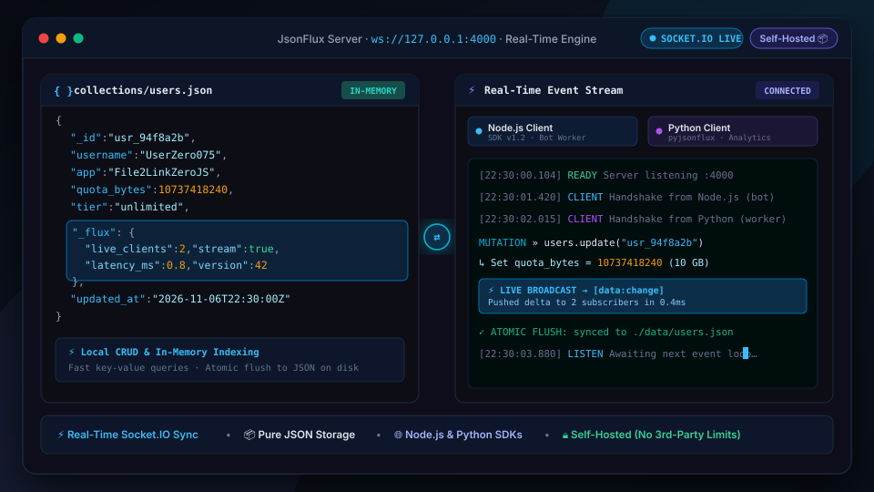

Lightweight real-time JSON database with Socket.IO synchronization. Host all your application data privately on your own server with instant event-driven updates and zero third-party cloud limits.
JsonFlux was created to provide a lightweight, high-performance database alternative for dynamic web applications, Telegram bots, IoT devices, and rapid prototyping where traditional SQL/NoSQL cloud setups are heavy or restricted by quotas.
It merges the simplicity of schema-free JSON document storage with real-time bi-directional WebSockets via Socket.IO, enabling clients to perform CRUD operations while automatically broadcasting live mutations to all subscribed applications in sub-millisecond times.
renameSync), complementado con copias de respaldo continuas (.bak).SIGINT, SIGTERM, beforeExit y exit que aseguran el volcado síncrono a disco antes del cierre con 0% pérdida de datos._isDirty: Evita escrituras en disco innecesarias o periódicas cuando no se han modificado datos.index en el payload. Ahora los esquemas, reglas unique y contadores se preservan íntegros en __METADATA__.destroy(): Corregido el acceso incorrecto a resultados de búsqueda única que impedía la eliminación de registros.subscribe, unsubscribe).flux:change) a todos los clientes conectados en submilisegundos.reqId y callbacks nativos Socket.IO ACK.Promise.all (Node.js) y asyncio.gather (Python) sin cruce de respuestas ni promesas colisionadas.$eq, $ne, $gt, $gte, $lt, $lte, $in, $nin, $contains y $regex.limit, skip, sort).--token o variable JSONFLUX_TOKEN) en endpoints REST y handshakes Socket.IO.JsonFluxClient): API limpia tipo ORM, reconexión automática y retrocompatibilidad con .DB().JsonFluxClient): Soporte de gestor de contexto async with, métodos tipados y suscripciones reactivas.renameSync), complementado con copias de respaldo continuas (.bak).SIGINT, SIGTERM, beforeExit y exit que aseguran el volcado síncrono a disco antes del cierre con 0% pérdida de datos._isDirty: Evita escrituras en disco innecesarias o periódicas cuando no se han modificado datos.index en el payload. Ahora los esquemas, reglas unique y contadores se preservan íntegros en __METADATA__.destroy(): Corregido el acceso incorrecto a resultados de búsqueda única que impedía la eliminación de registros.subscribe, unsubscribe).flux:change) a todos los clientes conectados en submilisegundos.reqId y callbacks nativos Socket.IO ACK.Promise.all (Node.js) y asyncio.gather (Python) sin cruce de respuestas ni promesas colisionadas.$eq, $ne, $gt, $gte, $lt, $lte, $in, $nin, $contains y $regex.limit, skip, sort).--token o variable JSONFLUX_TOKEN) en endpoints REST y handshakes Socket.IO.JsonFluxClient): API limpia tipo ORM, reconexión automática y retrocompatibilidad con .DB().JsonFluxClient): Soporte de gestor de contexto async with, métodos tipados y suscripciones reactivas.